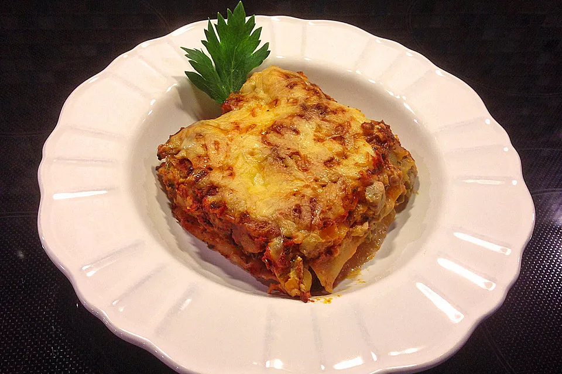

Gemüselasagne
Home

Beschreibung
Julies feine Gemüselasagne – Schmeckt auch Gemüse-Verschmähen
Rezept mit Sommergemüse und Tomatensauce. Man kann optional Sojahack hinzufügen.
Zutaten
- 1 Zwiebel
- 1 Möhre
- 1 große Zucchini
- 1 kleine Aubergine
- 1 Stange Staudensellerie
- 200g Schmand
- 250g Käse, gerieben
- 9 Lasagneplatten
Zubereitung
- Die Zwiebel schälen und fein hacken. Möhre, Zucchini, Aubergine und Sellerie waschen, putzen und in Würfel oder Streifen schneiden, dabei die Sellerieblätter beiseitelegen.
- Öl in einer Pfanne erhitzen und das Gemüse darin etwa 5 Minuten kräftig anbraten, mit Salz und Pfeffer würzen. Den Herd ausschalten und Schmand und 150 g Käse auf das Gemüse geben. Den Käse vorsichtig schmelzen lassen und gut mit dem Gemüse vermischen. Das Gemüse nochmals mit Salz und Pfeffer abschmecken.
- Für die Tomatensauce die sehr fein gehackten Knoblauchzehen im heißen Öl andünsten, mit passierten Tomaten ablöschen und aufkochen lassen. Das Tomatenmark einrühren und etwa 10 Minuten bei mittlerer Hitze köcheln lassen. Kräuter und Sellerieblätter fein hacken und einrühren. Die Sauce mit Salz und Pfeffer abschmecken und vom Herd nehmen.
- Gemüsemasse, Lasagneplatten und Tomatensauce in eine Auflaufform schichten, dabei mit Gemüsemasse beginnen und mit Tomatensauce abschließen. Mit dem restlichen Käse bestreuen.
- Im vorgeheizten Heißluftofen bei ca. 180 °C etwa 30 Minuten überbacken.
- Durch Käse und Schmand und in Verbindung mit der Tomatensauce bekommt das Gemüse einen feinen, cremigen und fruchtigen Geschmack und schmeckt deshalb auch denjenigen, die Gemüse sonst nicht so gerne haben.